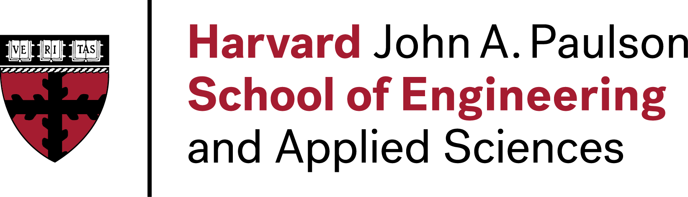

News
Recent announcements and highlights from our research group.
May 2025
Congratulations Lucas Monteiro Paes for defending his Ph.D.!
Lucas successfully defended his doctoral thesis and will be joining Apple in June. We're excited to see where his career takes him next!
April 2025
AI in Brazil Panel Series
Professor Calmon organized the AI in Brazil Panel Series, highlighting AI research and opportunities in Brazil. More information can be found here.
April 2025
Best Paper Award at NENLP
Our paper "AI Alignment at Your Discretion" won the Best Paper Award at NENLP. This work explores new approaches to AI alignment with practical applications. Read the paper here.
January 2025
Thomas D. Cabot Associate Professorship
Professor Calmon was named the Thomas D. Cabot Associate Professor of Electrical Engineering. We're excited to start this new chapter in advancing information theory research at Harvard.
July 2024
James L. Massey Research & Teaching Award
Professor Calmon received the 2024 James L. Massey Award from the IEEE Information Theory Society. The award recognizes outstanding achievement in research and teaching by young scholars in the Information Theory community. The official announcement can be found here.
March 2024
Lucas Monteiro Paes Named Apple Scholar
Congratulations to Lucas Monteiro Paes for becoming an Apple Scholar in AI/ML! This recognition highlights his outstanding research contributions. The announcement can be found here.
September 2023
New Research Funding
We received two new NSF awards and a Harvard Brazil Lemann Research Award! Our new projects focus on approximate coded computing, information theory and differential privacy, and algorithmic discrimination in education through the Lemann Brazil Research Fund Award.
May 2023
PhD Defenses
Congratulations to Dr. Hsiang Hsu and Dr. Wael Alghamdi for successfully defending their Ph.D. dissertations! Both have moved on to exciting new positions in academia and industry.
September 2022
Symposium on Machine Learning and Information Theory
Professor Calmon organized a symposium at the 2022 Congresso Nacional de Matemática Aplicada e Computacional in Campinas, São Paulo, Brazil. The workshop was supported in part by a Harvard Brazil Lemann Research Award.
August 2022
Meta Research PhD Fellowship Spotlight
Hsiang Hsu's research on predictive multiplicity and the Rashomon effect was featured as the Meta Research PhD Fellowship Spotlight!
July 2022
ISIT 2022 Tutorial
Professor Calmon organized a tutorial at ISIT 2022 on "Information-Theoretic Tools for Responsible Machine Learning" together with Haewon Jeong, Shahab Asoodeh, and Mario Diaz. Slides can be found here!
May 2022
Hao Wang PhD Defense
Congratulations to Dr. Hao Wang for defending his Ph.D. and joining the MIT-IBM research lab in Cambridge! You can read Hao's thesis here.
